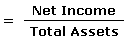

An indicator of how profitable a company is relative to its total assets. ROA gives an idea as to how efficient management is at using its assets to generate earnings. Calculated by dividing a company's annual earnings by its total assets, ROA is displayed as a percentage. Sometimes this is referred to as "return on investment".
The formula for return on assets is:
Note: Some investors add interest expense back into net income when performing this calculation because they'd like to use operating returns before cost of borrowing. ROA tells you what earnings were generated from invested capital (assets). ROA for public companies can vary substantially and will be highly dependent on the industry. This is why when using ROA as a comparative measure, it is best to compare it against a company's previous ROA numbers or the ROA of a similar company.
The assets of the company are comprised of both debt and equity. Both of these types of financing are used to fund the operations of the company. The ROA figure gives investors an idea of how effectively the company is converting the money it has to invest into net income. The higher the ROA number, the better, because the company is earning more money on less investment. For example, if one company has a net income of $1 million and total assets of $5 million, its ROA is 20%; however, if another company earns the same amount but has total assets of $10 million, it has an ROA of 10%. Based on this example, the first company is better at converting its investment into profit. When you really think about it, management's most important job is to make wise choices in allocating its resources. Anybody can make a profit by throwing a ton of money at a problem, but very few managers excel at making large profits with little investment.
Things to Remember
{kind=link}